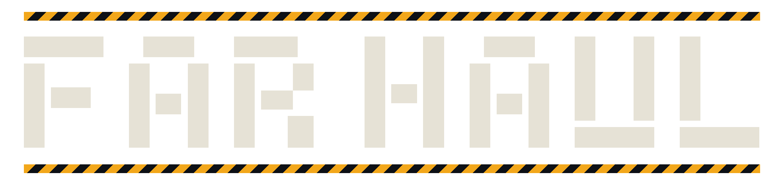
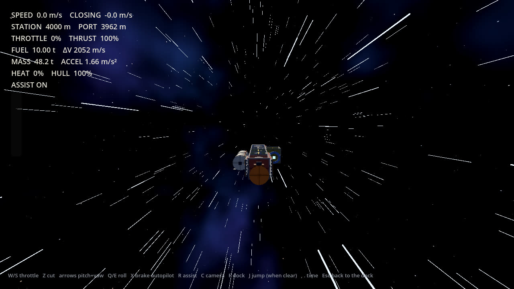

Build your ship. Haul the freight. Push the frontier.
Far Haul is a first-person freight, ship-building and exploration game. You own a small, secondhand ship, a modest bank balance and a strong opinion about fuel prices. You take contracts and move goods between worlds, because someone has to. This page shows what you can play today and what is still on the developer's list.
One portable file for 64-bit Windows, about 42 MB zipped. Unzip it anywhere and run FarHaul.exe; nothing is installed. Needs a mouse and keyboard.
- Version
- 0.11.0, prototype
- You can
- Build and name a ship, take freight from a living economy, fly local runs and dock, fit an FTL drive and jump between stars, walk your ship and ports that look like the people who built them, take work from people at the bar, land on moons and work outside in a suit, fly all the way out to Saturn's rings if your tanks are up to it, check the map to see how far you've got to go, and fly the long hauls from a phone on the sofa
- Not yet
- Planets with air, combat. Patience is required and, sadly, not sold anywhere

The game, and where it is today
Far Haul is about owning a working spaceship. The ship is a place you walk through, and freight is how you pay for it. The bank would like you to remember the second part.
You start as an independent operator with a cheap ship and just enough money to keep it flying, if nothing breaks. You take contracts, load containers, work out whether a job is worth the fuel, and run goods between established worlds. Over time you build bigger, buy range, and head out past the end of the charts, where there's no repair yard, no fuel depot and nobody to call. The farther you go, the less there is to help you, which is either the appeal or the warning.
What you can play today: design a ship from modules and find out whether it works, take freight from a simulated economy of eighteen systems, and fly it. You start with a sublight ship, so your first jobs are runs between the port, fuel depot, moon and belt of your own system, flown by hand or left to the autopilot. Save up for an FTL drive and the other systems open up, with a jump that takes you there without a cut. You can also get up from the helm and walk the ship while it flies. When you are berthed you are on your feet in the port, walking between the freight office, the fuel desk, the shipyard and the bar, where people ask for rush jobs, passage and sealed crates. Fit lander legs and every moon opens up: a base and a mining camp to land at, missions to do on foot in a suit, and an outpost, an ice mine and a deep crater to fly out to. And now there are space walks: out of the airlock on a tether with a wrench and a torch, patching the hull yourself while the ship coasts, unless somebody left the engine on. Most days a derelict drifts near the station, with salvage panels to torch off its hull and a cargo hatch to cut open: crates, supplies and ship parts to haul home and sell. Other ships come and go now too: haulers, station pods, survey craft and ships in orbit, and out on the long runs, now and then, a ship whose jump drive gave up halfway. Or hire a crew at the bar to do the repairs for you: engineers, deck techs, pilots, loadmasters and stewards, each with a name, a wage and a job that makes the ship better at its own. You can fire them too, for two days' pay. And the whole economy now opens its books: press N for the trade report, with where the freight is going, who's running short, who's earning, and the dent you're making in it.
Build order
- Ship builderPlayable now
- FlightPlayable now, with star jumps
- Walking insideShips and ports, rough
- Landing and exploringMoons and suit work, rough
- Tethered space walksHull repairs by hand, rough
- CrewHire, fire and put to work, rough
- Traffic and salvageOther ships, derelicts and their holds, rough
- Trade reportThe economy, out where you can see it
Coming next
In roughly this order, over the next few releases. Roughly, because plans are like cargo manifests: accurate until loading.
- Fitting salvaged partsBolt what you stripped off a wreck onto your own ship, at the condition it came in
- Boarding derelictsCut in through the airlock and walk the dark wreck: loose cargo, a log, maybe a survivor
- ManufacturersParts from companies with habits: cheap and fragile, heavy and tough, efficient and hot
- Talking to other shipsHails, fuel sales, tows, rescue calls, and rivals racing you to the same wreck
- Frontier growthOutposts that grow because you kept them supplied, and shrink when nobody did
- Danger, not combatDebris fields, solar storms that cook radiators, and claim-jumpers at derelicts
Area by area
| Area | What the game will be | Today | Status |
|---|---|---|---|
| Ship building | Ships assembled from physical modules: cockpit, hull, cargo holds, tanks, engines, radiators. Every compartment exists in the world. Balance, power, heat and thrust all matter. | A 3 m grid builder. Parts snap together at doors and mounts, and cheap door and hatch caps (plain or with a porthole) close the doorways you don't need, and engines, tanks and radiators can still bolt on over them. Live checks for sealed hull, airlock, power, cooling, thrust-to-weight, centre of mass and an FTL drive. Undo, redo, autosave. Away from the yard the ship wears an outer hull with rounded edges, so the rooms are no longer open to space. Windows, the airlock hatch and vents stay open; the engine, radiators, tanks and cargo racks are mounted outside, where engineers prefer them. | Playable |
| Menus, saves and ports | A proper start: pick who you are and where you begin, keep several games, and always return to the last place you stood. | New game with name, species, difficulty and starting system. Five save slots. You arrive on foot in a port's concourse, with desks for freight, fuel and repairs, the shipyard and a bar; a moon base pad has a domed hab with a survey lab and suit store, and a mining camp has the foreman's hut. The old station menu is still there at the terminal, for captains who don't like walking. Esc (or F10) pauses anywhere, with save, settings and quit, and in flight the ways home: turning back, the tug, ending a practice flight. Settings cover graphics quality, display, volume and mouse. Species gives no bonuses, only a different accent at the bar. | Playable |
| Known space | Eighteen systems from the five home worlds out to the last settlement at Lastlight, joined by trade routes and named corridors. Every place needs something from somewhere else. | Written as data and now running: five species, eighteen systems, nineteen routes. The economy simulation uses all of it, and the new game screen reads it for species and starting systems. Every system now looks like its builders and its work: Kesh steel, Ilyan light, Vey water, Orun stone, patchwork hubs, and human colonies in the livery of what they do. Ports grow from cramped frontier halls to grand core terminals, and each system's fuel depot, belt works and moon station is its own kind of place. Every system's world is drawn from its canon, and Sol's look like themselves: Earth, Luna, Mars, Venus, Jupiter and Saturn, because people would notice. Sol also has stations at Venus, Jupiter and Saturn, a long, thirsty way out. | Playable |
| Interiors | Cramped, practical, lived-in. Cabins, galleys, engine rooms and cockpits that look like they were built to do a job. | Each part has its own fitted interior: cockpit seats and controls, a reactor room, crew quarters with bunks and a galley, an airlock with suit lockers. You can see them from the builder camera, and walk them once the yard lets you go. | Rough |
| Freight and contracts | Cargo in standard containers, with real mass, value and handling needs. Demand that follows what each place makes and uses. | A contract board with live freight, deadlines and pay. You load, deliver and get paid, or cancel before you set off, for a fee. Sublight ships get in-system runs between the port, depot, moon and belt; interstellar freight needs an FTL drive. The hold is limited by what the tank can lift. People at the bar, dispatch and the camp foreman offer rush jobs, passengers and sealed crates, and your standing with them grows with good work. Bad work, they also remember. Cargo hauled out of a derelict's hold sells at the freight office to whoever at the port deals in it, or to the scrap dealer if nobody does. | Playable |
| Flying | Fly from the pilot seat. Fuel, range and an off-centre thrust line that costs manoeuvring propellant. | Free flight from the dock, flown local runs (burn, flip, brake, time compression, docking at the far station) and star jumps with a spool-up, streaking stars, a flash and a slowdown. Fuel, heat, power and hull damage all count. Optional braking thrusters slow you nose-on, and manoeuvring thrusters slide you sideways, so a docking approach stays lined up. The planet beside the station is solid, as some captains find out at speed, and so is everyone else's ship. Press X with a dead ship ahead on the route and the autopilot stops you beside it, with time compression easing off on the way in. A battered hull cracks its radiators, leaks fuel and knocks the cargo about, and at 0% nothing answers the helm until the rescue tug arrives with its salvage crew and its invoice. You hear the engine and lift jets through the hull, and the engine's plume grows with the throttle, along with the fuel bill. | Rough |
| Ship remote | A second screen for the cockpit on a phone or tablet. | Switch it on in Settings and open the address it shows on any phone or tablet on the same Wi-Fi: the trip, the map, the gauges, a throttle lever and the autopilots, braking and manoeuvring thrusters you hold down, and the FTL drive when you're clear, with the same limits as the keys. Steering stays at the helm. On a space walk it shows your air, tether and strain and can reel you in. A ship panel lists the crew and what each is doing, every working part's condition and the kits aboard. In port it does the desks: take freight, depart on autopilot, deliver, cancel, wait a day, hire and let go crew, buy kits and repairs, and sell salvaged cargo and parts. | Playable |
| Walking the ship | Leave the seat and walk the corridors while underway. A longer ship means a longer walk to engineering. | Press G at the helm to get up and walk in first person, with deck gravity. Walls, doorways, furniture and loaded containers block you. Ladder shafts change deck, and the airlock lets you off at a berth. The ship flies on as you left it. Ports, the moon hab and the camp hut are walkable too. | Rough |
| Landing and exploring | Land on rocky worlds and moons, then explore by ship, rover and on foot. | Every system has a moon (grey, ice, dust or heavy, each with its own gravity; Sol's is Luna) with a base pad and a mining camp you land on by hand. Lander legs open surface-only freight that pays more, and runs start by lifting off the surface. In a suit you have air to watch and kit to buy (bigger tanks, boots, a scanner, suit jets), timed missions to do, crates to carry at the camp, and samples, salvage, ice and rare crystals to find. Each moon also has an abandoned outpost, an ice mine and a deep glass crater, with boulders and slopes to land around, ideally not on. | Rough |
| Space walks and repair | Go out through the airlock on a tether to fix radiators, engines and hull damage. | Out of the airlock in space on a 30 m tether, on the suit's air and jets. Fix the hull's scorch marks by hand: a wrench for loose plating, a torch and a patch kit for holes, up to 50%. A ship that burns, brakes or spins strains the tether, and it can snap. Worn engines, radiators and thrusters can be serviced out there too, up to 50%. Tether over to a derelict and the torch cuts its salvage panels free and its cargo hatch open; the crates, supplies and parts inside come home one armful at a time. | Rough |
| Living economy | Freight demand that comes from what places produce and need. Frontier outposts that grow because you supplied them. | A simulation of production, stock, orders and shipping carriers across all eighteen systems runs alongside you. Easy, Normal and Hard change your costs and pay, not the world; Hard lives a few bad days from insolvency. The other carriers fly where you can see them, and salvage you sell lands on the buyer's shelves. Press N for the trade report: a month of freight, prices and shortages across known space, the lanes and the ships on them, every company's takings, and your own share and mark. Frontier growth isn't built yet. | Rough |
| Manufacturers and wear | Parts from companies with recognisable engineering habits. Components wear and fail where you can see it. | Engines, radiators, thrusters and lander legs wear with use and knocks, work less well as they go and stop when they fail. Service them yourself on a space walk, bring a failed one back with a spares kit, or have the yard overhaul the lot. One generic part for each job so far, so no manufacturers yet. Hull damage stays with the ship until you pay a repair desk, and prices differ from port to port, so shop around while dented. Short of cash, the desk patches what you can afford, or enough to fly freight again on account. You can see the damage from outside: scorches, venting plates and sparks. | Rough |
| Crew, passengers, salvage, combat | People who live aboard, wrecks worth boarding, and danger that is a cost to avoid rather than the main event. | Hire crew at the bar, with names in their own people's styles, a skill and a wage, and let them go when you must. Each job earns its pay: an engineer slows wear and services parts, a deck tech patches the hull, a pilot flies leaner and takes the brake point, a loadmaster saves the load, a steward earns better fares. They stand at their posts when you walk the ship. A big hold needs hands before it takes freight. Passengers ride along in spare berths. Wrecks and an abandoned outpost on the moons can be stripped for salvage, and derelicts drift near the stations: space walk over, torch salvage panels off the hull, cut the cargo hatch open and haul out the crates, supplies and parts, then sell them in port. Other haulers hold station by every port, come and go, and pass you on long runs; pods run errands, survey ships head out, tenders orbit, and ships stranded by failed jumps drift out on the routes. No combat yet. It's quiet out here. Suspiciously quiet. | Rough |
Screenshots
All taken from the game itself, no touching up. Select any image to see it full size.
Every system its own place
Each system's port is built in the style of the people who built it and dressed for the work it does, and its size and wear follow how settled it is. Out in space, the station's shape tells you what it's for before the docking fees do.
Around the game
Help
You start with a ready-made sublight hauler and 110,000 to 220,000 credits, depending on difficulty. Take local freight, save for an FTL drive, then go further. The steps below are plain on purpose: some things shouldn't be funny.
Your first ship
- Download and unzip the game, run FarHaul.exe, then choose New game. Pick a name, race, difficulty, starting world and save slot, then Begin. Later, use Continue or Load game to return.
- You arrive on foot in the port's concourse. Walk up to a desk and press E to use it. The Shipyard desk opens the ship builder. T opens the station terminal, which has every action as a menu.
- Look at the ship. Click a part in the palette on the left, then click next to the ship to place it. Green means it fits. Red tells you why not.
- Watch the power, cooling and cargo meters and the warnings on the right. Each warning says what is missing.
- Use Cargo preview to fill the hold and see the ship loaded. This only changes how the ship looks and weighs. It does not buy or sell anything.
- Type a name in Ship name. Press S to save. Your game also autosaves. Leave shipyard (L) saves and takes you back to the concourse.
- At the Freight office, take a run and load it. A sublight ship sees runs inside its own system. Choose Depart on autopilot to have it flown at the textbook fuel cost, or Fly the run yourself. The people at the bar have other work: rush jobs, passengers and sealed crates.
- Fit lander legs to land on a moon. At the base's hab, the suit store sells kit and dispatch posts missions; the airlock desk suits you up and puts you outside.
- Fit braking thrusters on the side of the hull, nozzles to the bow, and hold B to slow down without turning round. The braking autopilot uses them too, which makes docking much less of a pirouette.
- Add manoeuvring thrusters and hold Ctrl with the arrow keys to slide sideways or up and down without turning. Together with braking thrusters, the autopilot can line you up and stop you nose-on.
- Away from a berth, the airlock takes you on a space walk. Buy patch kits at the repair desk, then fix the scorch marks: 1 wrench for loose plating, 2 torch and a kit for holes, hold E. Up to 50%; past that it's yard work. Watch the air gauge, and don't leave the engine running.
- Fit crew bunks, then hire hands at the bar: a day's pay to sign them on, their wage every day after. An engineer, a deck tech and a pilot take most of the chores off you. Click a crew member twice to let them go.
- Fit an FTL drive in the shipyard (about 48,000 cr with its radiator) to take freight to other systems. At the freight office or the gate, Fly the jump undocks you and lets you press J once you are clear.
What makes a ship valid
- A cockpit to fly from.
- At least one engine pointing aft.
- A sealed hull. Cyan rings mark doorways that open onto space. Join another room to one, or bolt a door cap over it: 250 cr plain, 600 cr with a porthole. Turn the cap to face the doorway. Hatch caps close a ladder shaft's top or bottom, and parts can still bolt on over any cap.
- An airlock, so the crew can get in and out.
- Enough power for everything that draws it.
- Enough cooling for the heat you make.
- Enough thrust for the loaded weight. The stats panel shows thrust-to-weight empty and loaded.
- An FTL drive, if the freight crosses between systems.
Controls: shipyard
| Place a part | Left click |
|---|---|
| Remove a part | Shift + Left click |
| Rotate the part | R |
| Choose a part | 1 to 9, 0, [ ], or click it |
| Build deck down or up | Q / E |
| Undo and redo | Ctrl + Z / Ctrl + Y |
| Orbit the camera | Right-drag |
| Zoom | Mouse wheel |
| Pan | Middle-drag |
| Frame the whole ship | F |
| Hide the decks above | H |
| Save, clear | S, C |
| Leave the shipyard | L |
| Mute sound | M |
| Show the help text | F1 |
Controls: flying
| Throttle up, down, cut | W / S / Z |
|---|---|
| Pitch and yaw | Arrow keys |
| Roll | Q / E |
| Autopilot: stop at the target (on a run), or stop here | X |
| Course hold: keep travel on the target (aim within 5° first) | V |
| Rotation assist | R |
| Camera | C |
| Time compression, back to x1 | , / ., / |
| Dock | F, or T to let traffic control bring you in |
| Braking thrusters (if fitted) | Hold B |
| Slide sideways, up or down (manoeuvring thrusters, if fitted) | Ctrl + arrow keys |
| Call the tug (out of fuel or breached) | T |
| Pause menu: turn back, end a practice flight, save, settings | Esc |
| Engage the FTL drive | J, when clear of the station and cool |
| Get up from the helm | G |
| Map: this system, Tab for known space | M |
| Trade report (1 to 4 for pages) | N |
| Lift jets, hover hold (on a moon) | Space, H |
| Autoland on a beacon pad, or lift off on auto | T |
| Shut down on the pad | F |
Controls: on foot
| Walk | W A S D, Shift to run |
|---|---|
| Look | Mouse, or arrow keys |
| Take the helm, climb a ladder, leave by the airlock, use a desk | E |
| Station terminal (in a port) | T |
| Map | M |
| Trade report | N, anywhere |
| Free the mouse | Esc (it pauses), click to look again |
| Pause: save, settings, quit | Esc or F10, anywhere |
| Frame rate readout | F3 |
Controls: in a suit
| Walk, run | W A S D, Shift (uses air faster) |
|---|---|
| Jump, suit jets | Space, hold it in the air for jets |
| Take a find, set a beacon, pick up or drop a crate | E (hold it on a drill) |
| Back aboard, at the hatch | Q, or E |
Controls: on a space walk
| Drift on the suit jets | W A S D, Space / Ctrl up and down, Shift for more |
|---|---|
| Wrench, torch | 1, 2, or the mouse wheel |
| Fix the mark in front of you; cut a salvage panel or a cargo hatch (torch); take what floats out of a hold | Hold E, or the left mouse button |
| Stow what you're carrying | Bring it back to the hatch |
| Back aboard, at the hatch | Q |
Questions
How do I use the ship remote?
Turn on Ship remote in Settings. It shows an address and a six-digit code: open the address in the browser on a phone or tablet on the same Wi-Fi and enter the code. Windows will ask once to let Far Haul through the firewall; allow it on private networks. The remote does what the keys do, with the same limits, so it can't fly you past the game's own rules. In port it does what the desks do; flying a run yourself still starts in the game. New code unpairs every device.
Can I cheat?
For testing, yes. Turn on Debug cheats in Settings and the pause menu (Esc) gets two more buttons: a million credits, and a full repair and resupply (in flight it fills the tanks too). The save remembers that you used them. It won't judge. Much.
Where is my game saved?
In a Far Haul saves folder next to FarHaul.exe, automatically, every time you change something. The game is more careful with your progress than the bank is. Copy that folder with the exe to take your games to another computer. If the exe sits somewhere it cannot write (such as Program Files), saves go to your AppData folder instead; the Load game screen shows where.
I cannot place a part. Why?
Move the cursor over the ship and read the red message under it. The usual reasons are overlapping another module, no matching door or mount on the neighbouring part, or not enough credits. It's usually the credits.
Why can I only see a few jobs?
Without an FTL drive your ship only sees runs inside its own system, and only ones its tank can lift: the hold is limited by fuel, so a long hop means a lighter load. Fit an FTL drive and the interstellar board opens up. The people at the bar have more work than the board shows, and lander legs open surface runs that pay more. Ambition, as ever, costs fuel.
There is no sound.
Check the volume sliders in Settings on the title screen, and press M in the shipyard to check sound isn't muted there. Space is silent; the game isn't supposed to be.
It runs slowly.
Open Settings from the title screen and set Graphics quality to Low: it turns off shadows and anti-aliasing. If the game will not start at all, your graphics drivers may be too old for Vulkan; the game then falls back to a simpler renderer and soldiers on.
Does it run on Mac, Linux, a phone or in a browser?
Not at the moment. Far Haul is built for Windows PCs with a mouse and keyboard. The early browser version has been retired, with honours.
I ran out of air outside.
The base or camp crew drag you back aboard and bill you 800 cr, and any mission you held fails. Nobody mentions it again, except on the invoice. Watch the AIR readout top left: running uses air half as fast again, and it warns you below 20%. Bigger tanks at a hab's suit store give you up to 35 minutes.
How do I get to another star?
Fit an FTL drive in the shipyard, accept an interstellar contract, and choose Fly the jump at the freight office. Get 3 km clear of the station, slow down and let the engines cool, then press J. A jump costs fuel, fees and days of crew wages, and the world keeps moving while you travel. Prices too, usually upward.
About Far Haul
A game about owning a spacecraft and being free to go somewhere. Free in the philosophical sense; the fuel isn't.
Not a magical ship, and not a legendary warship. A machine you designed, paid for, patched together, overloaded and eventually know well enough to hear when something is wrong. There's no chosen hero and no galaxy to save. There's always another shipment, another settlement, and another star past the edge of the chart, plus an invoice for getting there.
What it is built around
- Function over formShips are boxes, frames, tanks, engines and radiators. A strange-looking ship that obeys the engineering is a perfectly good ship. Beauty is optional; radiators aren't.
- The ship is the placeEvery compartment is a real room. Cockpit, hold and engine room all exist, and walking between them takes time. Long ships, long walks.
- Freight is the economyCivilisation needs things moved. You earn by moving them, and what you earn becomes a better ship, eventually, after the bank.
- The frontier gets thinPast the core worlds there is less help. Eventually there's no repair yard, no fuel depot, and no rescue. Pack accordingly.
Known space
Humans, Kesh, Ilyan, Vey and Orun each have a home system and an engineering tradition. Trade has mixed them for generations, so a Kesh captain at a human-built terminal is ordinary. Your species shapes where you come from, not what you can do. The core is crowded and well supplied. Further out there are fewer ports, fewer repairs and less rescue, until Lastlight, where ordinary commerce runs out.
- Humans
- Sol. Modular, repairable, improvised. Many makers and standards.
- Kesh
- Keshar. Heavy, redundant, very durable. High gravity.
- Ilyan
- Ilos. Light, efficient, precise. Low gravity, great engines.
- Vey
- Veyara. Water, life support and biotechnology. Semi-aquatic.
- Orun
- Orun. Compact, accessible machinery and thermal control. Communal and underground.
The prototype
- Version
- 0.11.0, prototype
- Built with
- Godot 4.4, written in GDScript, using the Forward+ renderer (Vulkan) on Windows.
- Art and sound
- The textures, sky, logo and every sound effect (engines, footsteps, room tone, the suit, the jump) are generated in code. Earth's coastlines come from NOAA's public-domain GLOBE elevation data. The theme song is a custom track. The intro video is a placeholder, and knows it.
- Placeholders
- Prices, part stats and the intro video will all change, usually at the worst possible moment.
- Source
- github.com/benjaminarthurt/FarHaul